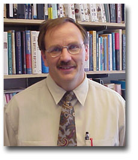
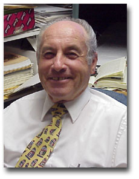
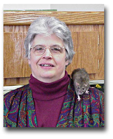
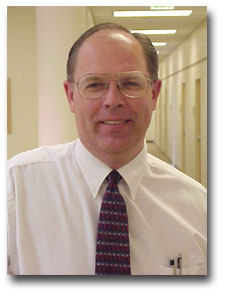
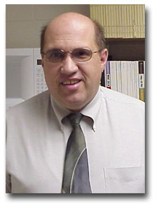

|
Our faculty work hard to keep the program
running and care about the students they teach. We appreciate the
excellent job they do for everyone they work with. Below is a quick
biography of each of them.
|

|
Jeff Andersen
HOME
PAGE
Jeff Andersen has taught
Humanities at Ricks College since 1988, having previously worked
for Saudi-Arabian Airlines in Jeddah, Saudi Arabia and
International English Institute in Fresno, California. He
completed his formal training at Brigham Young University.
Brother Andersen currently serves as Chair of the Department of
Humanities and Philosophy at Ricks. In addition to Humanities,
he has taught German, English, and Religion courses. Brother
Andersen has a passion for travel, having visited 29 countries
in Europe, Asia, Africa, and the South Pacific. He taught for
the BYU Study-Abroad Program in Vienna, Austria and has directed
seven student tours to Europe for Ricks College. Climbing a
pyramid in Egypt, scuba diving in the Red Sea, and riding an
elephant in the jungles of Thailand are among his most memorable
experiences.
|
|
|
|
|

|
Robyn Bergstrom
HOME
PAGE
Robyn Bergstrom has been teaching
at Ricks since 1994 in the Communication Department. She
attended Ricks College, and moved on to Brigham Young University
for her Bachelors Degree in Communication with a minor in
Psychology and English. She later received a Resource Specialty
from the University of Utah, and her Masters Degree is in
Communication from the University of North Dakota. She loves
teaching both Interpersonal Communication and Small Group
Communication. She is the Assistant Coach to the Forensics team,
and advisor to the Interpersonal Communication Club. She has
worked with the Chicago Urban Studies program, the Humanities
tour of Europe, and the Connection program for incoming
freshman. She enjoys spending time with her family and friends.
She is married to Scott Bergstrom and have four children. Mark,
Angie, Alison, and Erik. She loves the statement made by Nelson
Mandela. "Our deepest fear is not that we are inadequate.
Our deepest fear is that we are powerful beyond measure. It is
our light not our darkness, that most frightens us. We ask
ourselves, 'Who am I to be brilliant, gorgeous, talented,
fabulous?' Actually, who are you not to be? You are a child of
God."
|
|

|
Larry Coates |
|

|
Rick Davis
HOME
PAGE
Rick Davis may have grown up in Rexburg but he has seen the
world. His mission was in France and Switzerland where he gained
his love for Europe. He holds degrees from the University of
Idaho and Arizona State and was in law school when he was
drafted into the Viet Nam War in ‘68. Since coming to Ricks in
1971 he has taught courses in Western Culture, Humanities, Music
Appreciation, and Piano, the latter being something he has
played and enjoyed his entire life. He served as Chairman of the
Humanities department for 14 years, and is currently the
Director of the Honors Program.
A lover of diversity, he has participated in departmental
tours to Europe, co-authored two books, owns and operates a
professional photography studio, currently serves as the Madison
County Coroner, a post he has held for 20 years, and just this
past spring was the narrator/bass soloist in the college’s
production of Immanuel. Favorite quote: "Men should
be anxiously engaged in a good cause, and do many things of
their own free will, for the power is in them."
|
|

|
Lynn Firestone
HOME
PAGE
I started my road to the Ricks
College biology department when I enrolled at Slippery Rock
University in Western Pennsylvania where I was raised. After
attending Slippery Rock University for two years, I was
introduced to the Church of Jesus Christ of Latter-Day Saints
through my brother and a set of missionaries. I was a
"golden contact" and quickly joined the Church. I
immediately made plans to transfer to BYU where I finished my
Bachelor’s program in Secondary Education, Zoology. I then
remained at BYU and earned a Masters Degree in Botany, doing my
research in genetics and mine reclamation studies. Next , I
migrated north to Utah State where I began a Ph.D. in genetic
engineering. However, when my major professor left biology to
become a Computer Science teacher, I was left high and dry. I
then began a program in Plant Systematics. I later transferred
to Idaho State University where I received a Doctorate of Arts
degree in Biology. While I was working on my doctorate at ISU, I
became aware of a position here at Ricks and "the rest is
history", as they say. My first love is botany but I have
received thorough training in 11 different areas of biology.
I sincerely enjoy being a part
of the honors program because of the dedicated and motivated
students who respond well to my philosophy of teaching students
how to appreciate their ability to THINK and to become lifelong
learners.
|
|

|
Gerald Hansen
HOME
PAGE
I was born in Munich, Germany and
grew up in Nebraska, Iowa, and Arizona. I served a Mission in
Geneva, Switzerland. I am currently married with 8 children. I
hold a BA in English from Eastern Oregon State College, and MA
in English from BYU. I have taught 5 years at Kuna, Idaho
seminary, 4 years at the Institute at Purdue University, and 10
years at Ricks.
I like teaching honors because of
the deeper insights of the students.
|
|

|
Kip Hartvigsen
HOME
PAGE
I began my career as an "English
Pre-Law" major at B.Y.U. I think I was just looking
for an excuse to stay in English because when the time came to
study law, I couldn't make myself do it. "So, what I
do I do next?" That question sent me trekking through
M.A. and Ph.D. programs, first at B.Y.U. then at Washington
State University. Along the way, I married an English
major, Christen Brog*and we've had great fun collaborating on
writing projects ever since. We have four children, who,
by the way, have made it perfectly clear they will not major in
English. I have been at Ricks since 1982 and continue to
find the classroom experience here a source of growth and
pleasure.
|
|

|
Randy Hayes
HOME
PAGE
I'm married to Laura Hirschi with 9 children.
B.A. Business Weber State
M.A. Human Resource Development Brigham Young University
Taught in Seminary program for 9 years
Came to Ricks in 1988
Taught at BYU Jerusalem in 1995-96
Executive director and Chairman of the Board for Orphanage
support Services Organization. A non-Profit Organization
that Staffs Orphanages in Latin America and Asia.
|
|

|
Murray Hunt
Although a native of Idaho, I grew up in the San Francisco
Bay Area before serving a mission to Winnipeg, Canada. I
returned to the Bay Area for a graduate degree in Humanities and
Philosophy from Stanford after marrying my girlfriend, Maryjo
Colton, and graduating from BYU. Before landing at Ricks,
however, I raked leaves for my mother, delivered newspapers and
pizzas, wrote procedures for purchasing frozen lunches at a
top-secret government installation, and taught at Washington
State University--whatever it took to support our nine children.
I thoroughly enjoy Rexburg, Ricks, and the wonderful students
(especially those in the Honors Program). My goal in the
classroom is to make the academic experience exciting,
interesting, and lively, but demanding; for if learning isn’t
a joy, then students will not choose to do it on their own out
of the classroom, which is what a higher education really ought
to be about after all.
|
|

|
Brian Merrill
HOME
PAGE
Greetings. My name is Brian L. Merrill. I've been a faculty
member at Ricks College since 1988, with three years' hiatus for
doctoral work. Until 1998 I taught in the English Department.
Since then, I have been teaching in the Department of Humanities
& Philosophy. My wife Barbara and I have two children and a
Labrador named Jewel, whom we attempt to confine to the back
yard.
Apart from my family and the Lord, I have one driving
passion: learning. My boundless ignorance drives me to read and
study whatever and whenever I can. For relaxation I am rather
partial to early and classical music, jazz, thoughtful
conversation, and occasionally a good film. Finally I enjoy
traveling--anywhere will do, but I prefer Europe.
|
|

|
David Peck
HOME
PAGE
I was born in Salt Lake City, and
completed four years at Brigham Young before my peers began the
fourth grade! (I went to Brigham Young Elementary School, a
"Lab School" operated by the Education Department at
BYU, from Kindergarten through Third Grade, when the Lab School
was closed). After High School, I attended the University of
Utah, and obtained a Bachelor;s Degree (History, 1982), a
Master's Degree (Middle East Studies - History, 1985) and a law
Degree (1988). I am currently completing a dissertation to
obtain a PhD in history of the Modern Middle East.
I began working at Ricks in 1992. I
have taught courses in three different areas of study: Music (my
hobby is singing opera), Honors and History. I am currently a
member of the History faculty, and teach World Civilization
(History 110 & 111). The honors classes I have taught
include an historical survey of the Israeli/Palestinian Peace
Process, Constitutional issues (14th Amendment & abortion)
and Ethics (Physician Assisted Suicide).
In 1980 I married Rachel Raty (Ricks
College Spanish faculty). I have five children and a cat.
|
|

|
Bruce
Satterfield HOME
PAGE
Bruce Satterfield did his
undergraduate and graduate work in the States and the Middle
East. His education has centered on Old and New Testament
studies. He received degrees in Anthropology, Archaeology, and
Ancient Near (or Middle) East studies. As part of his studies he
was trained in Biblical Hebrew and New Testament Greek. While in
school in Jerusalem in 1979, Bro. Satterfield met his wife,
Carol. Their courtship took place in Israel and Europe. They
were engaged in Scotland and married in the Idaho Falls Temple
by his father, Homer Satterfield, who was a sealer in the
temple. They have five children: Rivka, Samuel, Benjamin,
Sheynah, and Neisah. Bro. Satterfield taught seminary and
institute in the Church Educational System for ten years
fulfilling various assignments in Arizona and Idaho. He
presently a faculty member of the Department of Religious
Education at Ricks College. Bro. Satterfield teaches Biblical
Hebrew in the Honor’s program. He does not believe that
understanding Hebrew or Greek is essential to scripture study,
but he has found that understanding these languages does help in
understanding the Bible better. Therefore, he enjoy’s teaching
the Biblical languages and helping students come to understand
Hebrew thinking.
|
|

|
I love teaching Ancient
World 200 and Modern World 201. We try to build pigeon boxes--a
chronology--into the two courses, but we are more interested in
the unfolding of ideas which impact us. Lecture-discussion along
with student presentations works best in my classes. Finally,
I'm not into guesswork in my classes: I let you know what I want
you to know. Remember what I tell you and you're home free with
an A.
|
|

|
Eric Walz has been teaching at Ricks since 1987 in the
History Department. Early in his academic career he graduated
from Ricks before going on to receive a Bachelors Degree in
History from Idaho State University, a Masters Degree from Utah
State University, and a Doctorate Degree in History from Arizona
State University. In graduate school, Brother Walz's major areas
of study included Modern U.S. History, the History of the
American West, and the History of Modern Japan. His personal
research focuses on Japanese immigration to the United States
between 1882 and 1924 and the development of ethnic communities
in the states of Arizona, Colorado, Idaho, Nebraska, and Utah.
Bro. Walz has presented papers in conferences in New York City;
Ann Arbor, Michigan; and Sacramento, California. He has several
published articles in professional journals and is expecting the
publication of his first book in the near future. His greatest
joy, however, is getting to know the students at Ricks on a
personal level. Eric and his wife Lynne have seven children,
five girls and two boys, ranging in age from twenty-two to
seven. They also have one granddaughter.
|
|

|
Speak your latent
conviction, and it shall be the universal sense; for the
inmost in due time becomes the outmost, and our first thought
is rendered back to us by the trumpets of the Last Judgment .
. . Yet we dismiss without notice our thoughts, because they
are our’s. In every work of genius we recognize our own
rejected thoughts; they come back to us with a certain
alienated majesty . . . The power that resides in us is new in
nature, and none but we know what that is which we can do, nor
do we know until we have tried . . . [Yet] we but half-express
ourselves, and are ashamed of that divine idea which each of
us represents. (Self-Reliance, Ralph Waldo Emerson)
Notwithstanding the fact
that I have graduated from Brigham Young University with a
Masters degree in American Literature and Composition
Philosophy, and from The University of Michigan with a Ph.D in
English and Education, I continue to feel like a kid in an adult
world. Perhaps this is why I live to learn from a variety of
sources. However, this zeal for learning didn’t begin in
elementary school. In fact, I don’t think I ever experienced
the excitement endemic to genuine learning until
college–particularly during my graduate work at the University
of Michigan. There my eyes were opened to the marvel of making
connections between myself and a myriad of ideas. Those who
shared their ideas in speech and in print were often on the
cutting edge of their discipline of their time. Whether it was
in science history, in art history, in language, in myth and
culture, in the philosophy of education, in social psychology,
in music, music history, or in religion, I became enamored of
the transforming power of creative thought as manifest by the
miracle of the spoken and written word. Consequently, in all of
what I teach--in my writing classes, my literature class, my
reading class, my C.S. Lewis class--I am moved to invite my
students into the wonder of thinking for themselves while I
teach to develop in them a commitment to pay the price necessary
to connect authentically with wisdom greater than themselves.
|
|